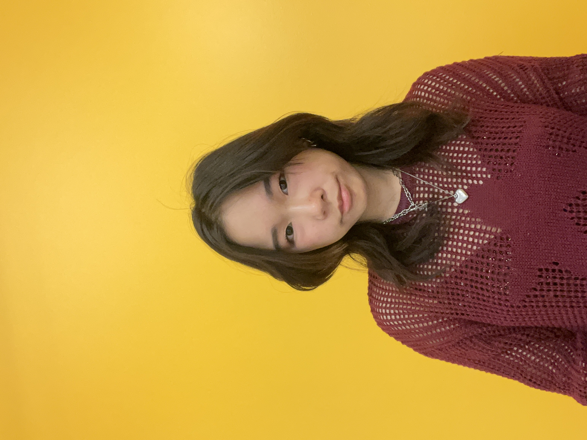
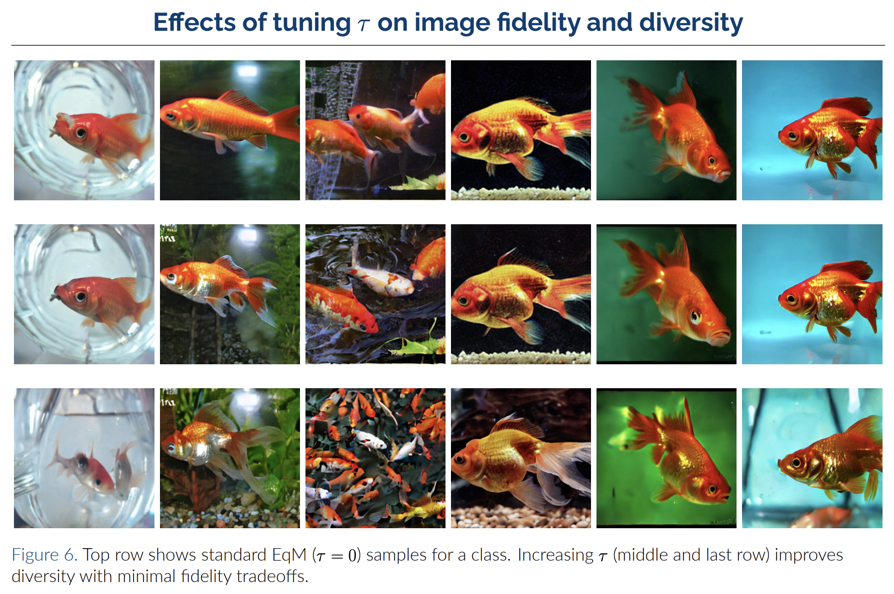

Hi, I'm Zoe! I'm currently a Post-baccalaureate Researcher at the Kempner Institute at Harvard University.
A central challenge in generative AI is steering what a model produces after it's already trained — controlling the style and structure of its outputs, incorporating external constraints, or correcting for biases baked into the training data. My research develops algorithmic techniques for this kind of inference-time control, grounded in the theoretical arguments of statistical inference and built to be empirically performant.
These ideas show up differently across domains: in language and image generation, they shape sample style and structure; in protein generation, they push samples toward performance metrics like stability, affinity, and closeness to a target structure; in robotic manipulation, they align policies with real-world physical constraints. I'm also interested in extending this framework to reasoning and computer vision, where similar questions of control and correction arise in different forms.

